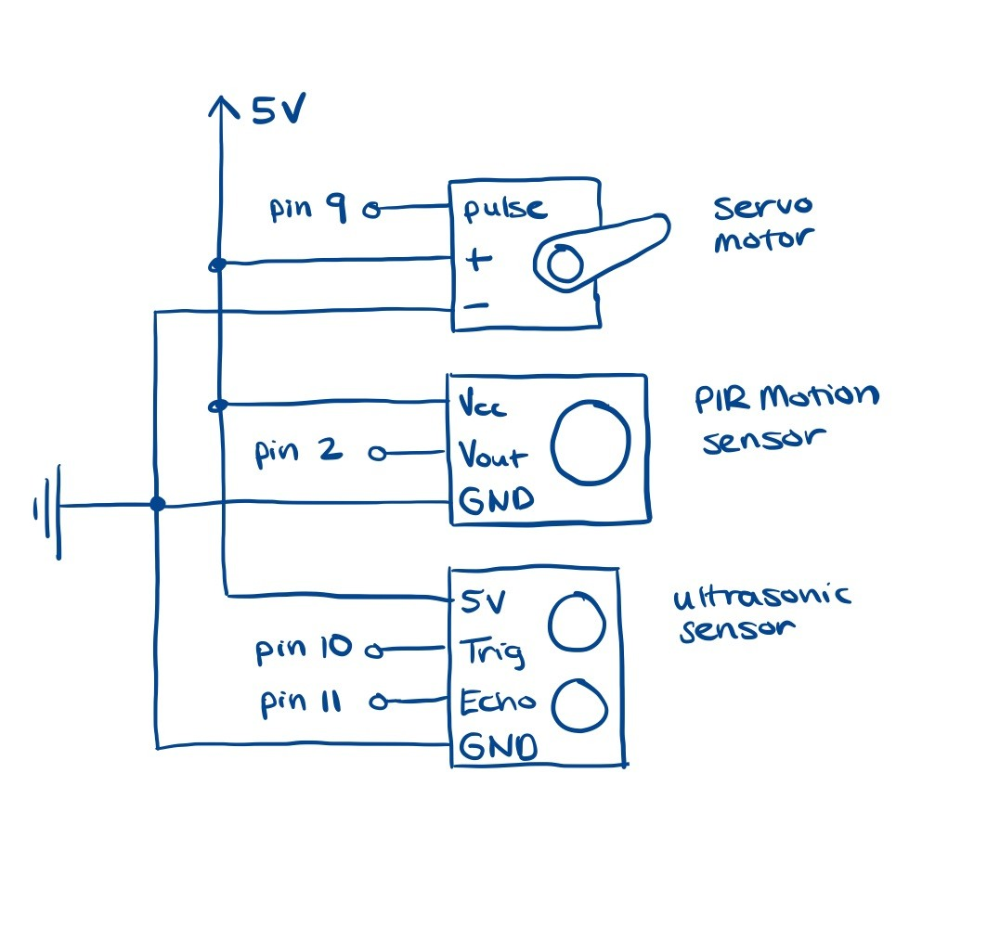
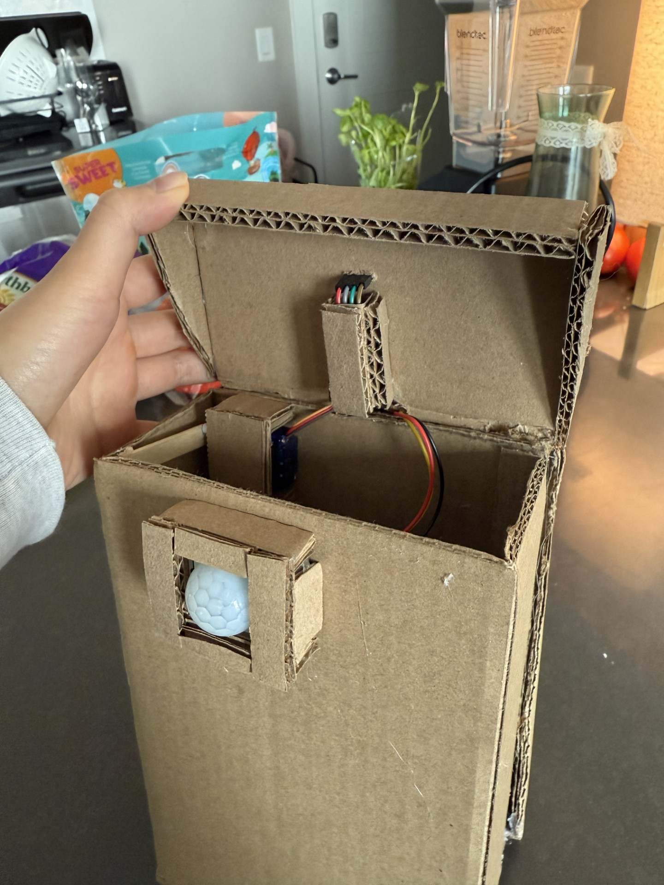

Project Concept/Motivation:
For my final project, I designed and built a smart trash can that automatically opens and closes when a user waves their hand in front of it. The initial concept was based around the idea of creating a "pet-resistant" trash can to prevent pets from accessing the contents by detecting height. However, after considering that my dog could easily tear apart the trashcan itself, I shifted my focus to a more practical and user-friendly solution: an automated trash can that responds to hand gestures. When I explored the possibility of using an ultrasonic sensor to measure height, I found that this was challenging without mounting the sensor in a fixed place above the object being measured. Ultimately, I decided to use the ultrasonic sensor to detect proximity, triggering the trash can when it senses movement within a certain distance.
Circuit Schematic
The circuit schematic for the smart trash can. The schematic illustrates how the PIR motion sensor, ultrasonic sensor, and servo motor are connected to the Arduino.
Bill of Materials
To build the smart trash can, I used the following components and materials:- PIR Motion Sensor (detects movement near the trash can)
- Ultrasonic Sensor (measures distance)
- Servo Motor (controls the opening and closing of the lid)
- Popsicle stick (scavenged from the Mill trash, used to extend servo motor arm)
- Cardboard (scavenged from my apartment's trash room to construct trash can body)
- Arduino and Breadboard
Circuit Setup
The circuitry for my project are housed in a separate compartment at the back of my trash can. The motion sensor, servo motor, and ultrasonic sensor are connected to the Arduino via wiring passes through a small hole in the cardboard wall are concealed and protected with cardboard casing.
Firmware & Technical Implementation
The PIR motion sensor detects movment near the trash can. After it senses movement, the ultrasonic sensor measures the distance of an object (e.g., a hand) from the trash can.
The Arduino process input from the sensors and triggers the servo motor accordingly. The code includes a 3-second delay after closing to ensure smooth operation.
The trash can body and lid were constructed using cardboard and popsicle sticks, with a separate compartment for housing the electronics.
#include
Servo lidServo; // Create a servo object
const int trigPin = 10; // Ultrasonic sensor pins
const int echoPin = 11;
const int pirPin = 2; // PIR motion sensor pin
int pos = 0; // Servo position
void setup() {
Serial.begin(9600);
lidServo.attach(9); // Servo to pin 9
pinMode(trigPin, OUTPUT);
pinMode(echoPin, INPUT);
pinMode(pirPin, INPUT);
lidServo.write(0); // Start with the lid closed
}
void loop() {
// Check PIR sensor for motion
if (digitalRead(pirPin) == HIGH) {
Serial.println("Motion detected!");
// Measure distance using ultrasonic sensor
long duration, distance;
digitalWrite(trigPin, LOW);
delayMicroseconds(2);
digitalWrite(trigPin, HIGH);
delayMicroseconds(10);
digitalWrite(trigPin, LOW);
duration = pulseIn(echoPin, HIGH);
distance = (duration / 2) / 29.1; // Convert to cm
Serial.print("Distance: ");
Serial.println(distance);
// If object is within 10cm, open the lid
if (distance < 10) {
lidServo.write(90); // Open lid
Serial.println("Lid opened");
delay(3000); // Keep lid open for 3 seconds
lidServo.write(0); // Close lid
Serial.println("Lid closed)");
delay(3000); // delay for 3 seconds so that trash can won't keep opening and closing
}
} else {
Serial.println("No motion detected.");
}
delay(100); // Small delay to stabilize readings
}
Project in Action!

The trash can automatically opens when it detects movement 0-10 cm away and will close after 3 seconds. There's also a 3 second delay after the trash can closes so that it won't rapidly open and close.